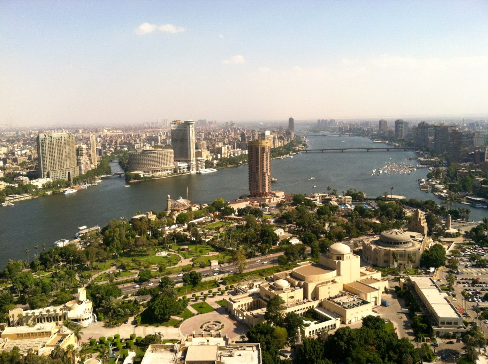
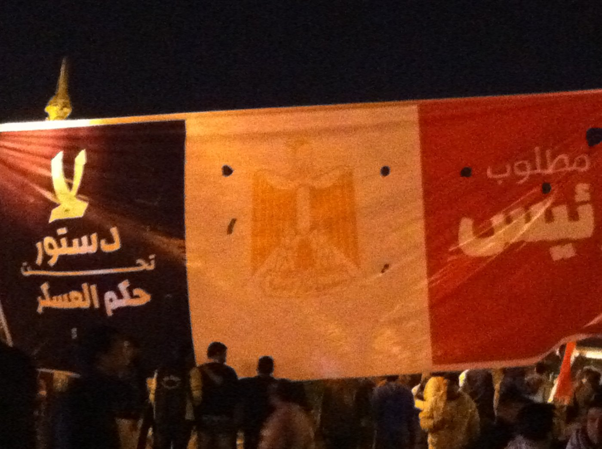
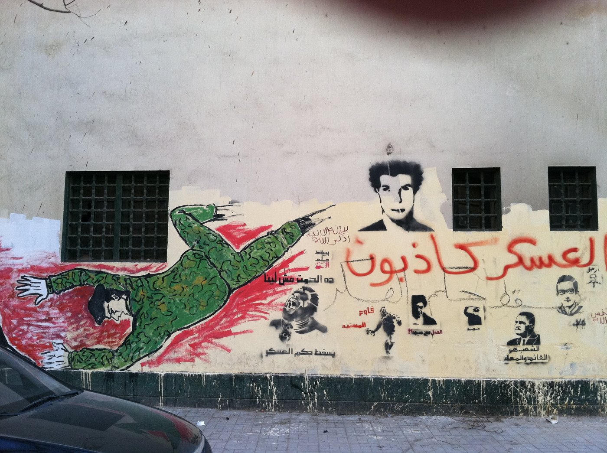
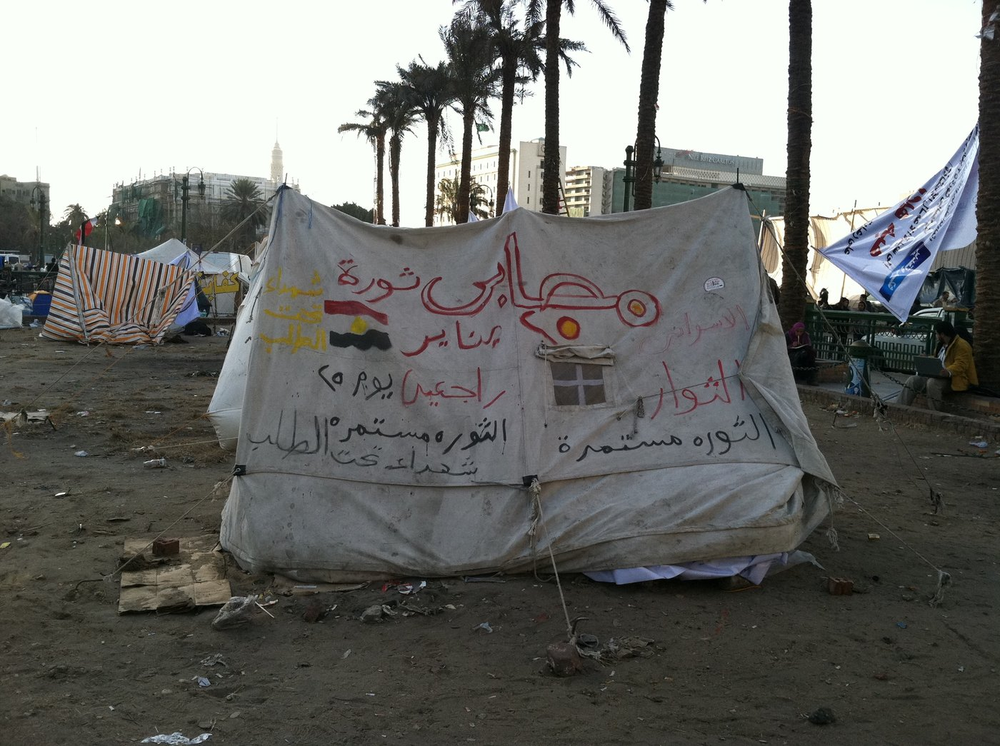

Photographs from field research on regime change, protest, and the politics of memory in Egypt. Back to Research Areas.
Cairo, July 2013
Photographs taken in Cairo in the weeks around the July 2013 coup, days after “The Egyptian State Unravels” appeared in Foreign Affairs.

Marchers carrying a banner reading “No to the coup” (لا للانقلاب), Cairo, 17 July 2013 (Revkin 2013)

Central Cairo from the Cairo Tower, 14 June 2013 (Revkin 2013)
Cairo, January 2012
The first anniversary of the January 25 revolution, during the period of military rule by the Supreme Council of the Armed Forces.

A banner in Tahrir Square reading “No constitution under military rule” (لا دستور تحت حكم العسكر), 25 January 2012 (Revkin 2012)

A mural near Tahrir Square reading “The military are liars” (العسكر كاذبون), 26 January 2012 (Revkin 2012)

A tent in Tahrir Square marked “The wounded of the January revolution” (مصابين ثورة يناير), 26 January 2012 (Revkin 2012)
All photographs by Mara Revkin. Dates and locations are taken from the original image metadata.